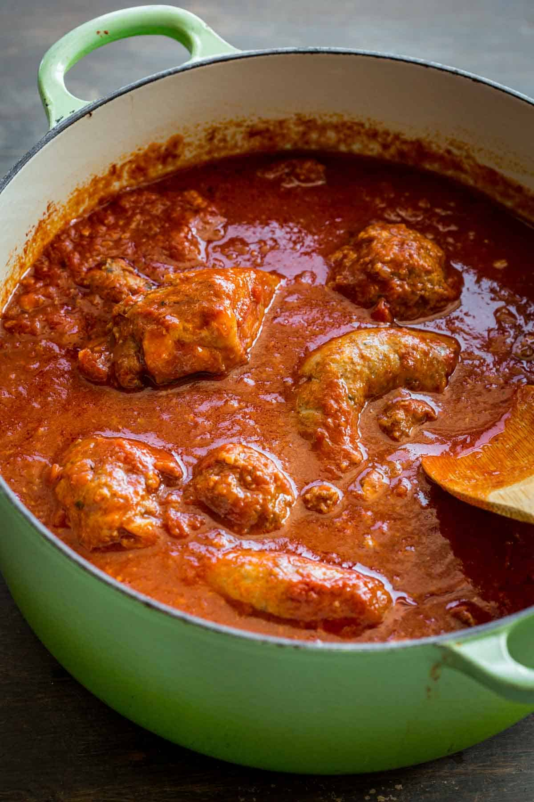

1 Cup Panko breadcrumbs (can be subbed with italian but careful with the salt amounts)
2 Eggs
2 tsp Kosher salt
1 tsp Fresh ground pepper
Pinch Red pepper flakes
1 Cup Ricotta cheese
Instructions
Preheat oven to 400F
Add all ingredients to a large mixing bowl and mix by hand
Roll mixture into golf ball sized meatballs and assemble on greased baking tray
Bake in oven at 400F for approx 20-25 minutes. They can be slightly undercooked if you would like to
finish cooking in the sauce.
The Sauce
Ingredients
½ Rack Pork baby back ribs cut into individual ribs
6-8 Italian sausages. 2 removed from the casings
2 Cloves Minced Garlic
3-28 ounce Can Whole peeled tomatoes
Handful Fresh Basil torn into small peices
1-15 ounce Can Tomato Sauce
2 Tbsp Dried Oregano
1 tsp Dried Italian Seasoning
1 tsp Garlic Salt
Extra Virgin Olive oil
Salt and pepper to taste
Instructions

Start with your cans of whole peeled tomatoes and either crush them with your hand or add them to a blender
and blend until mostly smooth. Does not have to be perfect. Set aside for now.
In a large pot on medium-low heat add your oil
Once the oil is glistening add your pork ribs and cook on each side to get a nice brown crust.
Remove to a plate on the side for now. They don't need to be cooked all the way through as they'll continue cooking in the sauce.
Continue with the italian sausages in the casing and cook until browned on all sides adding more oil
if needed. Again remove from the pot to the plate with the ribs.
Now add the sausage that was removed from the casing and break up with a spoon. Continue cooking
until browned.
To the pot add the minced garlic and torn basil and saute until fragrant.
Once cooked add the tomatoes you crushed and the tomato sauce. Be sure to scrape the bottom
of the pan with a wooden spoon to free the fond from the bottom of the pot.
Add the rest of the dried herbs and stir to incorporate
Add the meatballs from earlier, the sausages and the pork ribs back to the pot.
Bring to a boil then lower the temp and simmer for at least 3 hours but the longer the better. The
ribs should be falling off the bone.
Serve over your favorite type of noodle and enjoy.